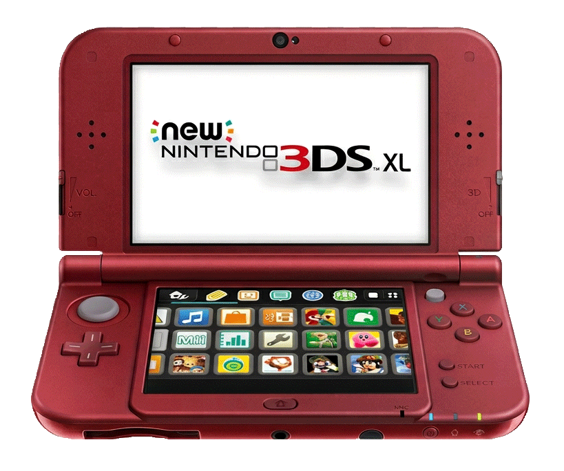

Behind the Barrier How the 3DS Made 3D Work

Magic in Your Hands
The Nintendo 3DS, released in 2011, marked the first commercially successful handheld console with 3D capabilities. The device featured a slider on the side of the case that enables 3D mode with compatible games.
The display was an impressive feat for players. It almost seemed like magic. Just move a slider, and the display now has another dimension of depth! The technology behind the feature is fascinating and takes advantage of the simple fact that we have two eyes.
Two Eyes, Two Inputs
Have you ever opened and closed each eye and noticed that the position of the objects in front of you appears to shift? This difference illustrates binocular disparity. Since humans have two eyes at different horizontal positions, each eye takes in an input in a slightly different position than the other.
First, Hold a finger up in front of your screen, near one of the shapes below. Next, close your left eye. Note where your finger appears relative to the shape. Now, close your right eye instead. Your finger appears to jump! Notice that the closer your finger is to your face, the bigger the jump. Finally, open both of your eyes and see how you can see both your finger and the shape underneath.
Both the shifting and the ability to see both shape and finger is due to binocular disparity.
Our brains automatically merge these two images by the process of stereopsis. Many forms of 3D imagery, such as 3D movie glasses, take advantage stereopsis to give the illusion of three-dimensional forms on two-dimensional screens.
Two Screens, One Illusion
In order to create a 3D effect, Nintendo included two displays within the device. Each layer works together to make you believe there is an added layer of depth to the screen. The use of using two displays to create a 3D effect is called autostereoscopic 3D.
The outer display features a parallax barrier. Parallax is a term that explains how light travels at different positions based on where our eyes are. The parallax barrier acts like a vent for the light coming from the lower display. Using the slider on the side of the 3DS enables and disables this vent, allowing for both 3D and 2D images to be displayed.
Toggle the 3D slider to enable the parallax barrier and see how light is directed to each eye.
In order for us to successfully perceive 3D, the device also must be able to display two images at once. When in 3D mode, the 3DS display effectively doubles its width in pixels. This is done by alternating each row of pixels to break up the screen into two images.
Although the effective resolution is doubled in 3D mode, the screen width doesn't actually change. The screen is always technically 800 pixels wide, regardless of depth mode. The pixels themselves are rectangular, with a height twice the size of the width. Each row of 2 rectangular pixels acts as a pair, matching the color between the sub-pixels. This creates the illusion of a square pixel. When 3D mode is activated, the pair switches to alternate between separate displays and the pixels appear as their true size.
Flip the 3D slider to switch between 2D mode (sub-pixel pairs show the same color) and 3D mode (each sub-pixel shows a different image).
Why Your Brain Buys It
"[The 3DS] displays an image for your left eye in such a way that only your left eye can see it, and an image for your right eye in such a way that only your right eye can see it" —Nintendo, via 3DS user manual
The effect also works due to the position of the player in front of the screen. When held around 12–14 inches in front of the players face, the eyes are able to align just right with the direction of the different angles of light. Each eye can then pick up the two separate images in the display.
Our eyes then merge the images through stereopsis. Since each vertical row of pixels alternates between the images, we have an easier time layering the two images together. This can still cause eye strain though, as viewing glasses-free stereoscopic 3D images for a long period of time can tire out the brain’s visual processing.
No Glasses Required
Many other forms of 3D require special glasses to experience the effect. These glasses also take advantage of binocular disparity like the 3DS display does. However, the glasses perform the work of separating the channels of light from any angle.
Anaglyph glasses—the glasses with iconic red and blue lenses—filter the specific light coming from each projected image. With anaglyph 3D, images are projected with either cyan or red tones that only each respective lens can filter. This follows an extremely similar two image-display system like the 3DS, but only works when glasses are worn.
There are benefits to using glasses 3D, such as being able to see the 3D image from any angle,but the 3D method the 3DS uses is more accessible at home. Nintendo's use of the parallax barrier and two-image display in the 3DS was still innovative and surprisingly simple, enabling audiences to experience the magic of 3D gameplay within their handheld devices.